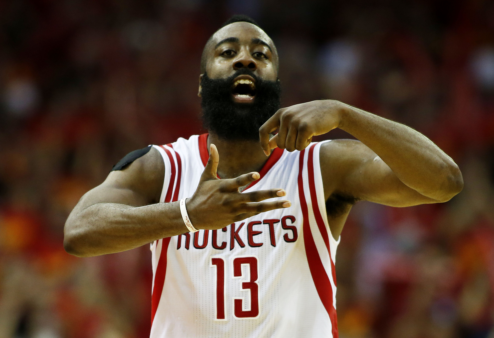
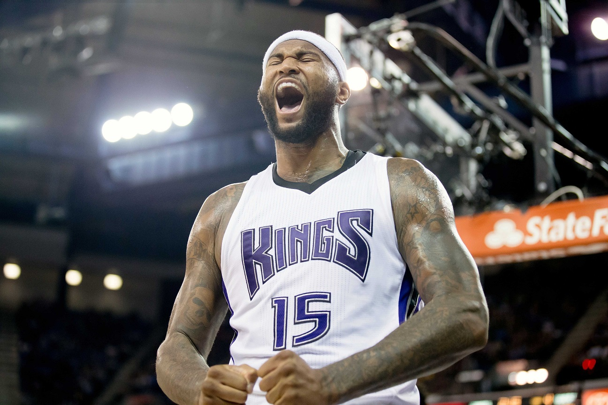
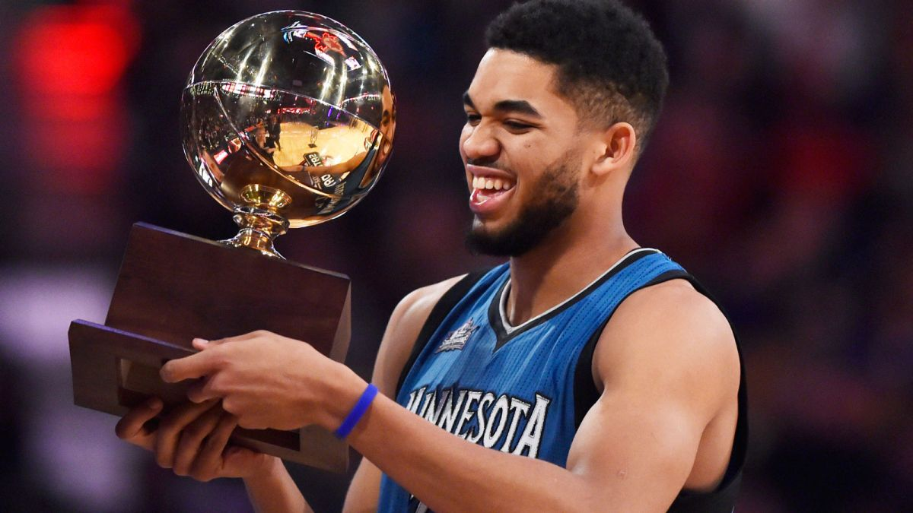
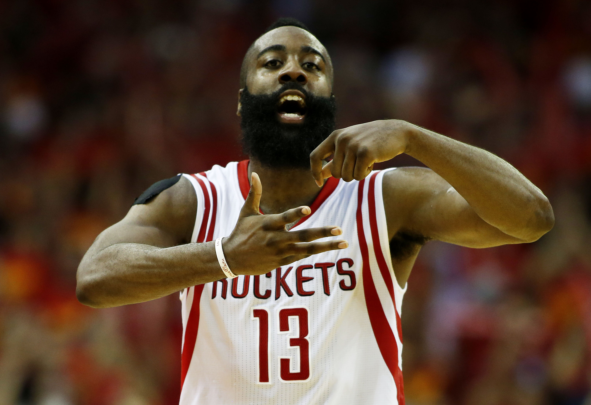
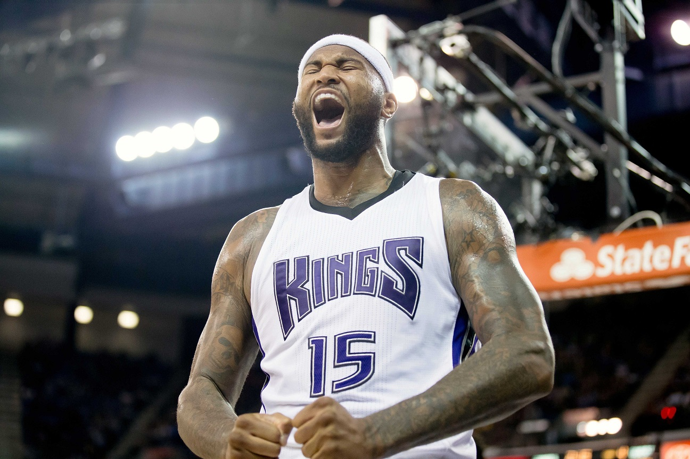
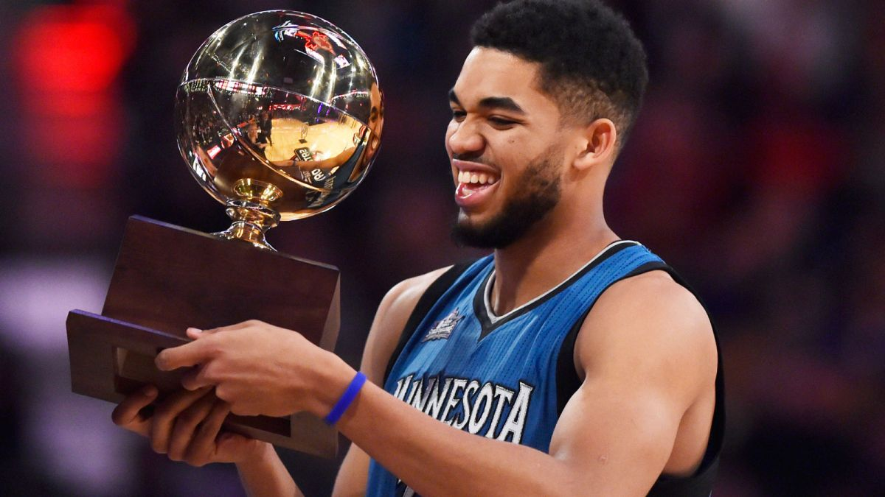

Russell Westbrook is a professional american basketball player who plays for the Oklahoma City Thunder (or OKC for short.)
Russell Westbrook was picked with the 4th pick in the 2008 NBA draft. Russell Westbrook is an absolute freak, in his nine seasons in the NBA he has only missed 69 games, this means that
he has played in 631 games, where as, players that were drafted in the same year like Derrick Rose have only played
444 games.
Two of his most memorable awards are in 2015 and 2016 where he won the all star MVP. It is Westbrook's 9th year in the NBA playing for just the one NBA team. Other interesting
facts about Russell Westbrook are that he was brought up in California, he is 6 foot 3 inches and he has never worn the same outfit twice to a basketball game.
Rookie Year
points
assists
rebounds
games
15.3
5.3
4.9
82
2016/2017 Season
points
assists
rebounds
games
31.4
10.3
10.5
45
Draft
number player got drafted
number 1
number 2
number 3
number 4
players name
Derrick Rose
Michael Beasley
O.J Mayo
Russell Westbrook
Team(s)
New York, Chicago
Phoenix, Houston, Milwakee, Miami, Minesota
Dallas, Milwakee, Memephis
Oklahoma
James Harden
James Harden is a professional basketball player and he plays for the Houston Rockets. His first ever team was the Oklahoma City Thunder(or OKC for short)
but then OKC had to trade Harden because they didnt have enough cap space to resign Harden. The reason they couldn't resign Harden is because of Kendrik
Perkins massive contract. The Thunder didn't have enough money to resign Harden on the max contract and thats all that Harden wanted, so rather than keeping a
dynasty they traded him to the Rockets where he has become the best shooting guard in the league.
Harden was the 3rd pick in the 2009 NBA draft.
Some interesting facts about Harden are that he went to Arizona College, Harden didn't have a beard when he first got into the NBA and Hardens idol is Manu
Ginobli.
Rookie Year
points
assists
rebounds
games
15.3
5.3
4.9
82
2016/2017 Season
points
assists
rebounds
games
28.9
11.6
8.3
48
Draft
number player got drafted
number 1
number 2
number 3
players name
Blake Griffin
Hasheem Thabeet
James Harden
Team(s)
LA Clippers
Memphis, Oklahoma, Houston, Portland
Houston, Oklahoma
Demarcus Cousins
Demarcus Cousins is a professional American basketball player who plays for the Sacremento Kings.
Demarcus was drafted in the 2010 NBA draft with the 5th pick, he has played for the same team every year
being the Sacramento Kings. Demarcus Cousins has played in 455 games missing just 77 games.
Demarcus Cousins is an amazing talent however he is a notorious hot head as he already has 13 technical fouls in only 40 games. The most he has ever got in one season
is 17 techs. Some interesting facts about Cousins is that his nickname is Boogie, he is 6 foot 11 inches tall and he went to college at Kentucky.
Rookie Year
points
assists
rebounds
games
14.1
2.5
8.7
81
2016/2017 Season
points
assists
rebounds
games
28.0
4.4
10.1
43
Draft
number player got drafted
number 1
number 2
number 3
number 4
number 5
players name
John Wall
Avery Bradley
Derrick Favours
Wesley Johnson
Demarcus Cousins
Team(s)
Washington
Boston
New Jersey, Utah
LA Lakers, LA Clippers, Phoenix, Minesota
Sacramento
Karl Anthony-Towns
Karl Anthony-Towns is a professional basketball player who plays for the Minesota Timberwolves. Towns was the number one pick in the 2015/2016
NBA draft. Towns has played in 125 games and he started every single one of them. Towns has never missed a game.
Towns may not play on the best team but he has some good quality
youth around him including players like Zach Lavine (two time dunk contest champion) and Andrew Wiggins (2014 rookie of the year.) Your in for some exciting basketball to come in the next
5-6 years. Some interesting facts about Karl Anthony-Towns is that his nickname is KAT and Towns went to high school at St. Josephs in New Jersey.
 




